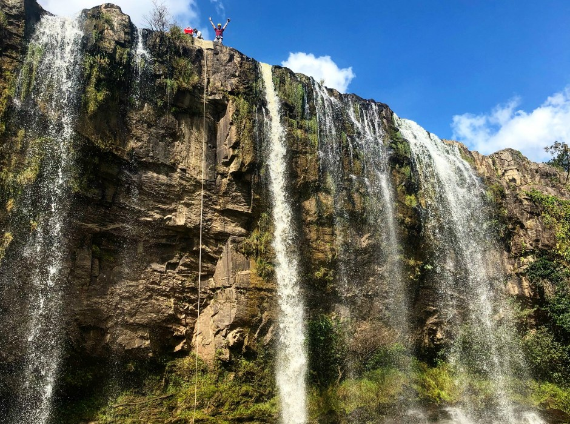

<ion-content>
    <ion-card>
        <ion-card-header>
            <ion-card-subtitle>La Paz</ion-card-subtitle>
            <ion-card-title>Marcala</ion-card-title>
            
        </ion-card-header>

        <ion-card-content>
            Marcala es un municipio en el departamento de La Paz. Se ubica en el departamento de La Paz, 
            a unos 100 Kilómetros al Oeste de Tegucigalpa. Situado en una planicie rodeado de montañas, 
            colindando al sur con la República de El Salvador
        </ion-card-content>
        <ion-button (click)="goItineraryDetails()">Ver actividades</ion-button>
    </ion-card>

</ion-content>